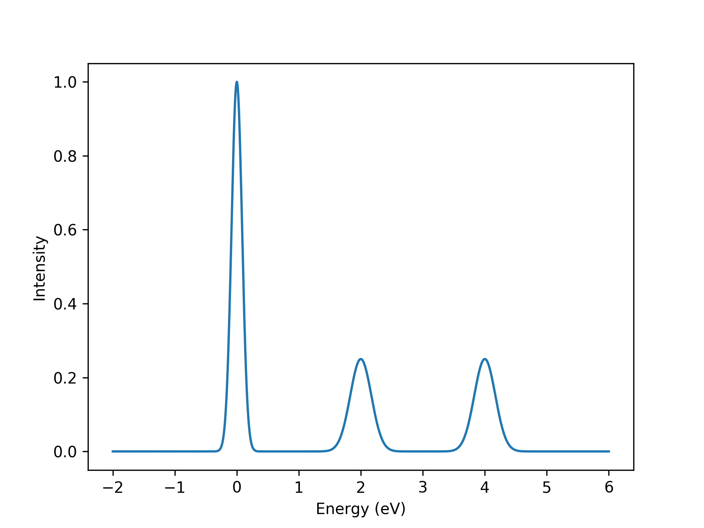
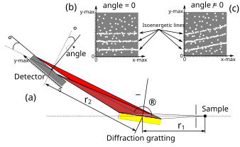
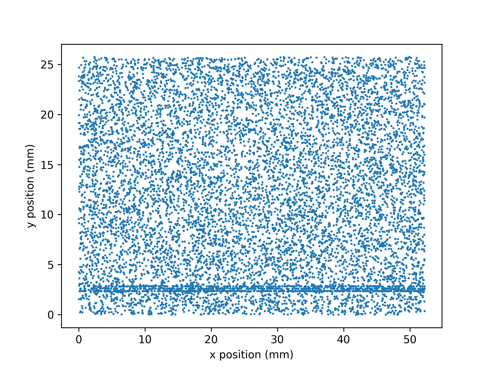
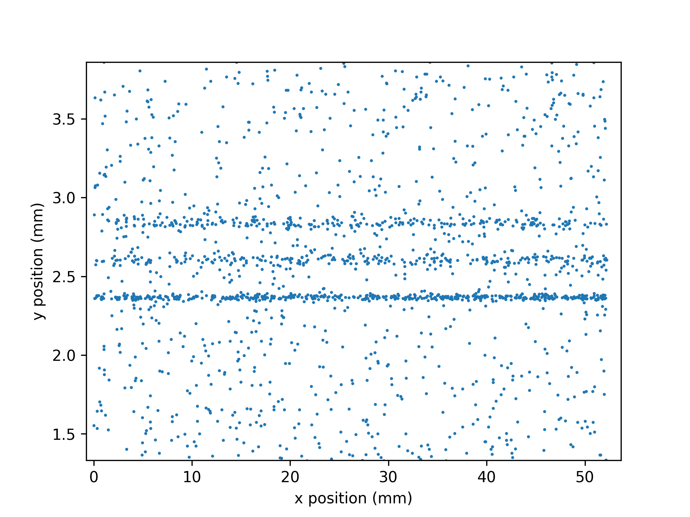

Dummy RIXS spctra generation¶
Module for generating dummy RIXS spectra.
This module is based on two functions, one for generating dummy photon events lists and another one for generating dummy spectra.
|
Returns a function I(E) of a simulated RIXS spectrum. |
|
Returns a list of simulated photon events, based on a simulated spectrum. |
-
brixs.dummy.dummy_spectrum(c=0, w=1, excitations=None)¶ Returns a function I(E) of a simulated RIXS spectrum.
I(E) is a function that returns the intensity of the simulated spectrum. The spectrum is composed by an elastic peak and many other peaks refered as excitations. The area, position, and width of those excitations are in terms of the amplitude, position, and width of the elastic peak. All peaks have a gaussian profile and the maximum value of the elastic peak is 1.
- Parameters
c (number, optional) – position of elastic peak in energy. Default is 0.
w (number, optional) – fwhm of the elastic peak in energy. Default is 1
excitations (list, optional) – list of excitations. Each element must be a list with three elements: the relative area compared to the elastic peak area, the distance from the elastic peak in energy units, and the relative width compared to the elastic peak width.
- Returns
function.
See also
Example
Simulate a spectrum with two excitations with half the area of the elastic peak and twice its fwhm.
>>> import brixs >>> import matplotlib.pyplot as plt >>> import numpy as np >>> I = brixs.dummy_spectrum(0, 0.2, excitations=[[0.5, 2, 2], [0.5, 4, 2]]) >>> x = np.linspace(-2, 6, 1000) >>> plt.figure() >>> plt.plot(x, I(x)) >>> plt.xlabel('Energy (eV)') >>> plt.ylabel('Intensity') >>> plt.show()

{kind=link}
-
brixs.dummy.dummy_photon_events(I, background=0, noise=0, exposure=1000000.0, dispersion=8450.0, x_max=0.05222, y_max=0.02573, y_zero_energy=0, angle=0, psf_fwhm=(0, 0))¶ Returns a list of simulated photon events, based on a simulated spectrum.
- Parameters
I (function) – a function that returns the intensity of a spectrum as a function of the energy. The maximum of the elastic peak is expected to be equal to 1.
background (float, optional) – this value will be added to the spectrum. Can also be called offset. The final spectrum is normalized so that the maximum of the elastic peak is equal to 1. Recomended value: from 0 to 1, assuming the maximum of the elastic peak is equal to 1.
noise (float, optional) – This adds a random gaussian probability (from -
noisetonoise) to the probability finding a photon at a certain position. Recomended value: from 0 to 1, assuming the maximum of the elastic peak is equal to 1.exposure (float, optional) – number of random (x, y) positions to test test the probability of finding a photon.
dispersion (float, optional) – must be given in units of [energy/distance. This is the value used for converting from energy units to positional units.
x_max (float, optional) – maximum value of x (detector’s size in the x direction).
y_max (float, optional) – maximum value of y (detector’s size in the y direction).
y_zero_energy (float, optional) – energy value of isoenergetic lines at y=0 (minimum energy value). The maximum energy value is calculated by
y_max\(\times\)dispersion.angle (float, optional) – rotation of the detector.
psf_fwhm (float or list, optional) – fwhm value of the gaussian error included in the (x, y) position to simulated precision errors of the detector and beamline. If one value is given, this is used for both x and y directions. If two values are given, they are used separetely for the x and y directions, respectively.
Warning
The script does not expect the user to input the parameter in any specific set units, like energy in eV’s or lenght in meters. The only requirement is that the user keeps the units consistent. If meter is used as the unit of lenght of a certain parameter, then meter shall be used in all other parameters.
- Returns
array with three columns, x, y, and I. The latter will always be equal to 1, i.e., only one photon is detected at each position.
See also
This functions creates a 2d probability distribution of detecting a photon onto the detector’s active area. Then, it creates a list of random (x, y) positions whithin (0,
x_max) and (0,y_max). Finally, it tests each positions against the probability distribution to see if a photon is detected on that position.The figure below shows a schematic representation of a RIXS spectrometer. In (a), we can see that the diffraction gratting will disperse scattered photon onto the detector along the y direction. The dispersion given in units of energy per length must be known in advance and assigned to
dispersionparameter. By default, the positiony=0is assigned to energy zero, but one can change that by assinging a different value toy_zero_energy.In (a) one can see the that the
angleparameter rotates the detector and desalign the isoenergetic lines with the edge of the detector (See (b) and (c)).
The algorithm works in the following manner:
1) we create a list of random (x, y) positions. The variable
exposuregives the lenght of this list. The higher the value ofexposure, the more random position will be created and tested. Note that, this parameter emulates the effect of a longer or shorter exposure time, however, it cannot be directly associated with the real exposure time of a experiment.2) The variable
I(E), which is a function that returns the intensity of a spectrum as a function of the energy (This can be generated bysimulate_spectrum()), is proportional to the probability of finding a photon at a certain position in the detector. Therefore, one can calculate the probability of detecting a photon at each of the random (x, y) position created in step 1. The equation below depicts how background and noise affect this probability.\[\text{Prob}(x, y) = (I(\text{energy} + \text{y_zero_energy}) + \text{background})*(1 + \text{random_noise}) / (1 + \text{background})\]where the (x, y) position is converted into energy by taking into account the
dispersionand the parameterangle.3) After we have calculated the probability of finding an photon for each (x, y) position we test each probability, e.g., if the probability of finding a photon in a certain position is 70%, we simulate a riggeed coin flip where the outcome has 70% chance of being heads. After tossing the coin, if the result is heads, the photon is counted and the respetive (x, y) position is included in the
photon_eventlist. If the result is tails, that position is discarted.4) At this point the
photon_eventlist is ready. As a final step, we can simulate precision errors which tipically comes from the limited resolution of the detector or possible instabilities of the beamline itself. This is done by adding a random gaussian error in each of the (x, y) positions in thephoton_eventlist, e.g., a certain position \((x, y)\) where a photon as detected will became \((x+\Delta x, y+\Delta y)\), where \(\Delta x\) and \(\Delta y\) are a random gaussian error. The width of the gaussian error is set by psf_fwhm.Example
Simulate a
photon_eventlist of a generic spectrum. The spectrum will have two excitations with half the area of the elastic peak and twice its fwhm.>>> import brixs >>> import matplotlib.pyplot as plt >>> import numpy as np >>> # simulating a generic spectrum >>> I = brixs.dummy_spectrum(0, 0.2, excitations=[[0.5, 2, 2], [0.5, 4, 2]]) >>> # simulating the photon_event list(where we're using energy in eV's and length in meters) >>> photon_events = brixs.dummy_photon_events(I, background=0.02, >>> noise=0.05, >>> exposure=50e4, >>> dispersion= 8.45 * (10**-3 / 10**-6), >>> x_max=52.22e-3, >>> y_max=25.73e-3, >>> y_zero_energy=-20, >>> angle=0, >>> psf_fwhm=(3e-6, 1e-6)) >>> print(photon_events) [[1.36263387e-02 2.29071963e-03 1.00000000e+00] [3.19917559e-02 4.48965702e-04 1.00000000e+00] [4.96047073e-02 9.76363776e-05 1.00000000e+00] ... [2.37889174e-04 1.50658922e-02 1.00000000e+00] [1.58122734e-02 4.33273762e-03 1.00000000e+00] [4.61469585e-02 2.45566831e-03 1.00000000e+00]] >>> # ploting photon_events >>> plt.figure() >>> plt.plot(photon_events[:, 0]*10**3, >>> photon_events[:, 1]*10**3, >>> linewidth=0, >>> marker='o', >>> ms=1) >>> plt.xlabel('x position (mm)') >>> plt.ylabel('y position (mm)') >>> plt.show()

Zooming in, we can clearly see the isoenergetic lines formed by the elastic peak and the other two excitations.

{kind=link}
{kind=link}
{kind=link}